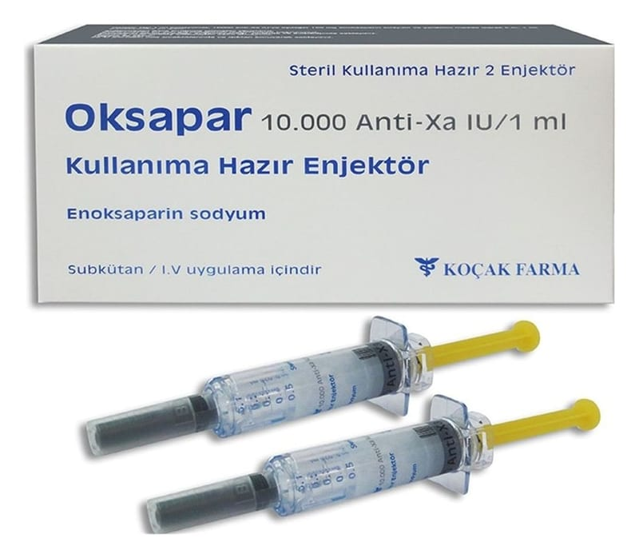

Oksapar 10000 Anti-Xa/1 ml Kullanıma Hazır Enjektor, 2 Enjektör

Ne için kullanılır
KT · Bölüm 1• OKSAPAR, 1 ml de 100 mg enoksaparin sodyum içerir. Her 1 mL 'lik steril çözelti, 100 mg enoksaparin sodyum'a eşdeğer 10000 anti-Xa IU içerir. 1 mg (0,01 ml) enoksaparin sodyum yaklaşık 100 anti-Xa IU'ya karşılık gelir.
• Enoksaparin sodyum, domuz bağırsak mukozasından türetilen heparin benzil esterin alkalin depolimerizasyonuyla elde edilen biyolojik bir maddedir.
• OKSAPAR, 100 mg enoksaparin sodyum’a eşdeğerdir. İlaç kutusunun içinde 2 adet 1 ml’lik kullanıma hazır enjektör bulunur.
• OKSAPAR, düş ük molekül ağırlıklı heparinler adı verilen bir ilaç grubuna dahildir. Vücudunuzdaki toplardamarlar içinde oluşmuş pıhtı nın tedavisinde kullanılmamaktadır, pıhtıyla gelen hastalarda kullanım amacı yeni pıhtı oluşumunu önlemektir.
• OKSAPAR aşağıdaki nedenlerden biri veya birkaçının tedavisinde kullanılır: - Genel cerrahi ya da ortopedik cerrahi girişimlerden sonra toplardamarlarınızda (venlerinizde) istenmeyen kan pıhtılarının oluşmasını engellemek için
- Ani hastalıklarda (örneğin, kalp yetmezliği, solunum yetmezliği, enfeksiyonlar ve romatizmal hastalıklar) yatağa bağlı kaldığınızda toplardamarlarınızda (venlerinizde) gelişen istenmeyen kan pıhtılarının oluş masını engellemek için
- Beraberinde akciğer damarlarınızın bir pıhtı ile tıkanması mevcut olsun veya olmasın, Derin Ven Trombozu (DVT) adı verilen genellikle bacak toplardamarlarının bir pıh tıyla tıkanmasıyla oluşan klinik durumu teda vi etmek için
- Kararsız anjinayı (kalp damarlarının t ıkanmasına işaret eden şiddetli göğüs ağrısı) ve belli bir tipteki kalp krizini (Q dalgasız miyokard infarktüsü) tedavi etmek için aspirinle birlikte kullanılmak üzere
- Diyaliz sırasında kanınızın cihazı n tüpl erinin içinden geçerken pıhtılaşmasını önlemek için (diyaliz; böbreklerin kanı temizleme işlevini yerine getirememesi nedeniyle, hastanın kanının belli aralıklarla özel bir cihaz içinden geçirilerek temizlenmesi işlemidir.)
- Kendini EKG’de ST-segment yükselmesi şeklinde özel bir bulguyla gösteren ve kalp kasına yeterince kan gitmemesinden kaynaklanan; akut ST- yükselmesi olan miyokard infarktüsü (STEMI) adı verilen klinik durumu tedavi etmek için (Size tıbbi tedavi uygulanmış olsa da, ya da daha sonra Perkütanöz Koroner Girişim (PCI) adı verilen bir uygulama yapılmış olsa da; doktor unuz size bu ilacı reçetelemiş olabilir.)